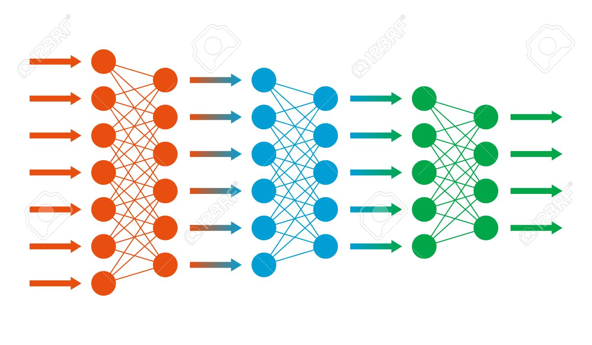

Seminario de Tecnología

HTML5
HTML5 es un lenguaje markup (de hecho, las siglas de HTML significan Hyper Text Markup Language) usado para estructurar y presentar el contenido para la web. Es uno de los aspectos fundamentales para el funcionamiento de los sitios, pero no es el primero. Es de hecho la quinta revisión del estándar que fue creado en 1990.
A fines del año pasado, la W3C la recomendó para transformarse en el estándar a ser usado en el desarrollo de proyectos venideros.
Por así decirlo, qué es HTML5 está relacionado también con la entrada en decadencia del viejo estándar HTML 4, que se combinaba con otros lenguajes para producir los sitios que podemos ver hoy en día.
También existe el HTML Dinámico (DHTML), que es una mejora de Microsoft de la versión 4.0 de HTML que le permite crear efectos especiales como, por ejemplo, texto que vuela desde la página palabra por palabra o efectos de transición al estilo de anuncio publicitario giratorio entre página y página.

CCS3
CSS significa Cascade Style Sheets, también llamado Hojas de Estilo en Cascada. CSS es un lenguaje de marcado que se emplea para dar formato a un sitio web. Es decir, funciona en conjunto con los archivos HTML.
Por esta razón, para crear un sitio web debes saber tanto HTML como CSS. Cabe agregar que el lenguaje CSS3 se puede aplicar en la misma hoja en la que estás desarrollando un documento HTML, pero por motivos de productividad se suele realizar en un documento aparte con la extensión .css..
Este documento se puede vincular a cada página HTML que conforme el sitio web, es por ello que es más útil realizar los estilos por separado. Con CSS3 see obtiene un mayor control de la presentación del sitio al poder tener todo el código CSS reunido en uno, lo que facilita su modificación.
Gracias a CSS3 se obtiene un mayor control de la presentación del sitio al poder tener todo el código CSS reunido en uno, lo que facilita su modificación.
JAVASCRIPT
JavaScript es un lenguaje de programación, al igual que PHP, si bien tiene diferencias importantes con éste. JavaScript se utiliza principalmente del lado del cliente (es decir, se ejecuta en nuestro ordenador, no en el servidor) permitiendo crear efectos atractivos y dinámicos en las páginas web.
Cuando un usuario escribe una dirección web en su navegador, el servidor recibe la petición y como respuesta a esa petición envía al ordenador del usuario código HTML junto a código JavaScript. El código HTML se encarga de que en la pantalla se muestre algo, por ejemplo una imagen, un menú, etc.
El código JavaScript se puede encargar de crear efectos dinámicos en respuesta a acciones del usuario, por ejemplo que se despliegue un menú tipo acordeón cuando el usuario pasa el ratón por encima de un elemento del menú.
La ventaja de JavaScript es que al estar alojado en el ordenador del usuario los efectos son muy rápidos y dinámicos. Al ser un lenguaje de programación permite toda la potencia de la programación como uso de variables, condicionales, bucles, etc. También podemos citar algún inconveniente: por ejemplo si el usuario tiene desactivado JavaScript en su navegador, no se mostrarán los efectos.
PROGRESIVE WEB APPS
Progressive web apps (o aplicaciones web progresivas), es un término que se da a una nueva generación de aplicaciones que incrementan su funcionalidad, conforme las capacidades del dispositivo en el que se ejecutan, incrementan, de ahí la palabra progresiva.
La siguiente parte del nombre web, hace referencia a que se construyen utilizando estándares de desarrollo web, algunos ya conocidos como HTML, CSS y javaScript; y una nueva generación de APIs de javaScript. La parte final app es porque las progressive web apps se comportan como aplicaciones web nativas, pero usan tecnologías web, entonces pwa es un conjunto de nuevos estándares, no uno solo, en palabras más claras, PWA es un concepto, un término.
Otra ventaja de las aplicaciones progresivas frente a las nativas es el menor trabajo de programación que requiere su desarrollo por ser al mismo tiempo una página web y una aplicación independiente de plataforma. Esto reduce los costes de desarrollo en gran medida, aun para una PWA que muestra un rendimiento equiparablemente satisfactorio en muchos escenarios. A esto se añaden las escasas necesidades de memoria en el dispositivo de una progressive web app, aunque esto depende, en última instancia, del tamaño de la caché offline del terminal.
No obstante, se puede considerar la estructura fundamental como asentada. Una PWA es accesible en Internet con un URL y se ejecuta en el navegador, lo que hace posible que funcione en diferentes sistemas operativos y no dependa de la tienda de aplicaciones ni requiera una instalación.
INTELIGENCIA ARTIFICIAL
La Inteligencia artificial La inteligencia artificial es la combinación de algoritmos planteados con el propósito de crear máquinas que presenten las mismas capacidades que el ser humano. Una tecnología que todavía nos resulta lejana y misteriosa, pero que desde hace unos años está presente en nuestro día a día a todas horas.
Una tecnología que todavía nos resulta lejana y misteriosa, pero que desde hace unos años está presente en nuestro día a día a todas horas. La encontramos en la detección facial de los móviles, en los asistentes virtuales de voz como Siri de Apple, Alexa de Amazon o Cortana de Microsoft y está integrada en nuestros dispositivos cotidianos a través de bots (abreviatura de robots) o aplicaciones para móvil.
El objetivo de todas ellas: hacer más fácil la vida de las personas. La IA ya está transformando las expectativas de sus clientes. Piense en el cliente que utiliza apps como Uber, Google y Amazon. Si entra a una tienda departamental para comprar un traje, ¿qué se necesita para brindarle el mismo nivel de servicio al que se ha acostumbrado? Los minoristas deberían saber quién es ese cliente y por qué ha comprado algo en línea.
Los avances en IA ya están impulsando el uso del big data debido a su habilidad para procesar ingentes cantidades de datos y proporcionar ventajas comunicacionales, comerciales y empresariales que la han llevado a posicionarse como la tecnología esencial de las próximas décadas. Transporte, educación, sanidad y cultura.
Machine learning
Machine learning, conocido en español como aprendizaje automático o aprendizaje de máquina, nació como una idea ambiciosa de la IA en la década de los 60. Para ser más exactos, fue una subdisciplina de la IA, producto de las ciencias de la computación y las neurociencias.
Lo que esta rama pretendía estudiar era el reconocimiento de patrones (en los procesos de ingeniería, matemáticas, computación, etc.) y el aprendizaje por parte de las computadoras. En los albores de la IA, los investigadores estaban ávidos por encontrar una forma en la cual las computadoras pudieran aprender únicamente basándose en datos.

Deep learning
El aprendizaje profundo, también conocido cono redes neuronales profundas, es un aspecto de la inteligencia artificial (AI) que se ocupa de emular el enfoque de aprendizaje que los seres humanos utilizan para obtener ciertos tipos de conocimiento.
En su forma más simple, el aprendizaje profundo puede considerarse como una forma de automatizar el análisis predictivo.

Red neuronal
Las redes de neuronas artificiales (denominadas habitualmente como RNA o en inglés como: “ANN”) son un paradigma de aprendizaje y procesamiento automático inspirado en la forma en que funciona el sistema nervioso de los animales. Se trata de un sistema de interconexión de neuronas que colaboran entre sí para producir un estímulo de salida. En inteligencia artificial es frecuente referirse a ellas como redes de neuronas o redes neuronales. Forman parte de los denominados “Sistemas Inteligentes“, dentro de la rama de la Inteligencia Artificial.
CRIPTOMONEDAS
La Criptomoneda es un nuevo concepto de dinero o medio de intercambio, también puede referirse a ella como moneda virtual, moneda digital, dinero electrónico o dinero online. La más conocida es el Bitcoin, la moneda electrónica nació en 2009 por Satoshi Nakamoto.
A la llegada del 2008 la economía mundial entra en serios problemas y los bancos centrales les inyectan mas dinero a causa y efecto se crea la primera moneda virtual: el Bitcoin, sin estar respaldado por ningún gobierno ni depende de la confianza de ningún emisor central, sino que utiliza un sistema de novedoso para impedir el doble gasto y alcanzar la aprobación entre todos los los participantes que integran la red.
Nació la moneda del futuro y ese futuro se ha convertido en presente. En febrero del 2011, el Bitcoin consigue ir a la par con el dólar y en octubre del 2012 se consolida como moneda de intercambio virtual. Para marzo del 2013, el valor total de todos los Bitcoins que hay en el mercado asciende a la cantidad de 1 billón de dólares. El 9 de abril, el precio del Bitcoin sube a doscientos dólares.
En octubre del 2013 se crea el primer cajero de Bitcoin en Vancouver, Canadá y en noviembre del 2013 supera ya los mil dólares. Muchas monedas han sido utilizadas a lo largo de la historia, respaldadas por diferentes patrones entre los más populares se encuentra el oro, la plata, el trigo, tabaco, sal, cacao y muchas otras; las cuales también varían debido a su ubicación en el mundo.

BLOCKCHAIN
Qué es el blockchain? Entre otras cosas, es una de las palabras de moda en los últimos tiempos. La cadena de bloques es también un concepto que plantea una enorme revolución no solo en nuestra economía, sino en todo tipo de ámbitos.
Entender lo que es esa cadena de bloques no es tan difícil, y dado que cada vez se utiliza más este concepto hemos querido hacer una especie de curso rápido de introducción al blockchain, para explicar qué es, cómo funciona y cuál es esa revolución que plantea la cadena de bloques.
Qué es entonces la cadena de bloques? Pues un gigantesco libro de cuentas en los que los registros (los bloques) están enlazados y cifrados para proteger la seguridad y privacidad de las transacciones.
Uno de los conceptos que más están apareciendo al hablar de las criptodivisas y las cadenas de bloques es el de las ICO, las Initial Coin Offerings. Una ICO es como explicamos en profundidad una forma de financiación de un proyecto empresarial que en lugar de ofrecer acciones ofrece tokens virtuales, o lo que es lo mismo, nuevas critpodivisas.
CYBERSEGURIDAD
Cyberseguridad se conoce como “Protección de activos de información, a través del tratamiento de amenazas que ponen en riesgo la información que es procesada, almacenada y transportada por los sistemas de información que se encuentran interconectados”.
La norma ISO 27001 define activo de información como los conocimientos o datos que tienen valor para una organización, mientras que los sistemas de información comprenden a las aplicaciones, servicios, activos de tecnologías de información u otros componentes que permiten el manejo de la misma.
Por lo tanto, la ciberseguridad tiene como foco la protección de la información digital que “vive” en los sistemas interconectados. En consecuencia, está comprendida dentro de la seguridad de la información.
Los últimos estudios de seguridad en el mundo afirman que hoy, éste delito, es el segundo de mayor alcance en el mundo después del narcotráfico. Las herramientas de seguridad se orientan a servir como barrera de protección contra ataques cibernéticos.
REALIDAD VIRTUAL
La realidad virtual (RV) es un entorno de escenas u objetos de apariencia real. La acepción más común refiere a un entorno generado mediante tecnología informática, que crea en el usuario la sensación de estar inmerso en él.
Dicho entorno es contemplado por el usuario a través de un dispositivo conocido como gafas o casco de realidad virtual. Este puede ir acompañado de otros dispositivos, como guantes o trajes especiales, que permiten una mayor interacción con el entorno así como la percepción de diferentes estímulos que intensifican la sensación de realidad.
La Enciclopedia Británica describe la realidad virtual como "el uso del modelado y la simulación por computadora que permite a una persona interactuar con un entorno sensorial tridimensional (3D) artificial u otro entorno sensorial.
Además, establece que "las aplicaciones de realidad virtual sumergen al usuario en un entorno generado por computadora que simula la realidad mediante el uso de dispositivos interactivos, que envían y reciben información y se usan como gafas, auriculares, guantes o trajes para el cuerpo.
REALIDAD AUMENTADA
La realidad aumentada (RA) es el término que se usa para definir la visión de un entorno físico del mundo real, a través de un dispositivo tecnológico. Este dispositivo o conjunto de dispositivos, añaden información virtual a la información física ya existente; es decir, una parte sintética virtual a la real.
La realidad aumentada es diferente de la realidad virtual: sobre la realidad material del mundo físico monta una realidad visual generada por la tecnología, en la que el usuario percibe una mezcla de las dos realidades; en cambio, en la realidad virtual el usuario se aísla de la realidad material del mundo físico para sumergirse en un escenario o entorno totalmente virtual.
Con la ayuda de la tecnología; por ejemplo, añadiendo la visión por un computador y reconocimiento de objetos, la información sobre el mundo real alrededor del usuario, se convierte en interactiva y digital.
La información artificial sobre el medio ambiente y los objetos puede ser almacenada y recuperada como una capa de información en la parte superior de la visión del mundo real.
REALIDAD MIXTA
La realidad mixta (RM), también llamada a veces realidad híbrida, es la combinación de realidad virtual y realidad aumentada. Esta combinación permite crear nuevos espacios en los que interactúan tanto objetos y/o personas reales como virtuales.
El término realidad mixta no debe confundirse con el de realidad aumentada o RA. La realidad aumentada genera los estímulos a tiempo real para la interacción del usuario, los cuales se superponen sobre el entorno físico de este, mientras que la realidad mixta no sólo permite la interacción del usuario con el entorno virtual sino que también permite que objetos físicos del entorno inmediato del usuario sirvan como elementos de interacción con el entorno virtual.
Como ya se ha dicho, la realidad mixta permite la incorporación de objetos gráficos generados por ordenador en una escena tridimensional del mundo real o bien la incorporación de objetos reales en un mundo virtual.
La realidad mixta se está implementando en un gran número de aplicaciones, se está empezando a manifestar en la industria del entretenimiento y el arte, así como también empieza a diversificarse en el mundo de la educación y los negocios.
IOT (INTERNET DE LAS COSAS)
Es un concepto que se refiere a la interconexión digital de objetos cotidianos con Internet. Alternativamente, Internet de las cosas es la conexión de Internet con más cosas u objetos que con personas.
También, se suele conocer como Internet de todas las cosas o Internet en las cosas. Si los objetos de la vida cotidiana tuvieran incorporadas etiquetas de radio, podrían ser identificados y gestionados por otros equipos, de la misma manera que si lo fuesen por seres humanos.
El Internet de las cosas debería codificar de 50 a 100 000 millones de objetos y seguir el movimiento de estos. Se calcula que todo ser humano está rodeado, al menos, por un total de aproximadamente 1000 a 5000 objetos.
Las aplicaciones para dispositivos conectados a internet son amplias. Múltiples categorizaciones han sido sugeridas, la mayoría están de acuerdo en separar las aplicaciones en tres principales ramas de aplicación: consumidores, empresarial, e infraestructura

MECATRÓNICA
La ingeniería mecatrónica es una disciplina que sirve para diseñar y desarrollar productos que involucren sistemas de control para el diseño de productos o procesos inteligentes, lo cual busca crear maquinaria más compleja para facilitar las actividades del ser humano a través de procesos electrónicos en la industria mecánica, principalmente.
Esta disciplina une la ingeniería mecánica, ingeniería electrónica, ingeniería de control e ingeniería informática. Debido a que combina varias ingenierías en una sola, su punto fuerte es la versatilidad.
Un consenso común es describir a la mecatrónica como una disciplina integradora de las áreas de mecánica, electrónica e informática cuyo objetivo es proporcionar mejores productos, procesos y sistemas industriales.
La mecatrónica no es, por tanto, una nueva rama de la ingeniería, sino un concepto recientemente desarrollado que enfatiza la necesidad de integración y de una interacción intensiva entre diferentes áreas de la ingeniería.
3D PRINTING
La impresión 3D es un grupo de tecnologías de fabricación por adición donde un objeto tridimensional es creado mediante la superposición de capas sucesivas de material.
El aditivo de fabricación se lleva a planos virtuales de diseño asistido por ordenador(CAD) o el software de modelado y animación, se encuentran en secciones digitales para la máquina para utilizar sucesivamente como una guía para la impresión.
Dependiendo de la máquina que se utiliza, el material o un material de unión se deposita sobre el lecho de construcción o de la plataforma hasta que el material de estratificación aglutinante es completa y el modelo 3D final ha sido impreso
Una interfaz estándar de datos entre el software CAD y de las máquinas es el formato de archivo STL (STL (siglas provenientes del inglés "'STereo Lithography) es un formato de archivo informático de diseño asistido por computadora (CAD) que define geometría de objetos 3D, excluyendo información como color, texturas o propiedades físicas que sí incluyen otros formatos CAD).
TECNOLOGÍA G5
En telecomunicaciones, 5G son las siglas utilizadas para referirse a la quinta generación de tecnologías de telefonía móvil. Es la sucesora de la tecnología 4G.
Actualmente se encuentra sin estandarizar y las empresas de telecomunicación están desarrollando sus prototipos. Está previsto que su uso común sea en 2020.
Da compañía sueca Ericsson aún no ha conseguido alcanzar velocidades de 5 Gbps reales, con demostraciones en directo del estándar previo a la tecnología de red (preestándar) 5G.
El programa surcoreano “5Gmobile communication systems based on beam-divisionmultiple access and relays with group cooperation” se formó en 2008. En Europa, Neelie Kroes, la Comisaría Europea, recibió en 2013 50 millones de euros para las investigaciones con el objetivo de entregar la tecnología móvil 5G en 2020.
RESUMEN
HTML5
HTML5 es un lenguaje markup (de hecho, las siglas de HTML significan Hyper Text Markup Language) usado para estructurar y presentar el contenido para la web. Es uno de los aspectos fundamentales para el funcionamiento de los sitios, pero no es el primero.